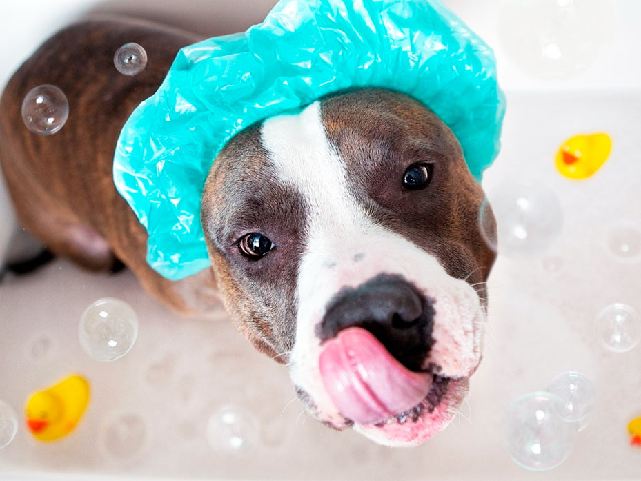
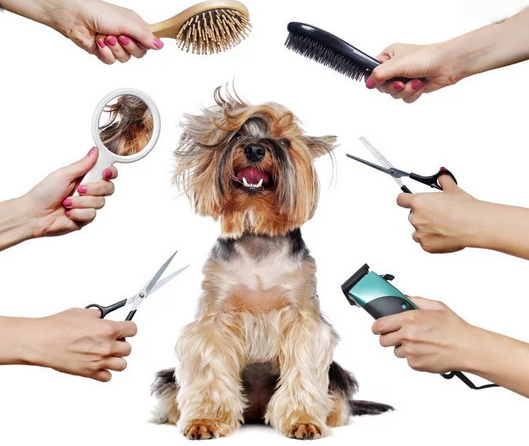
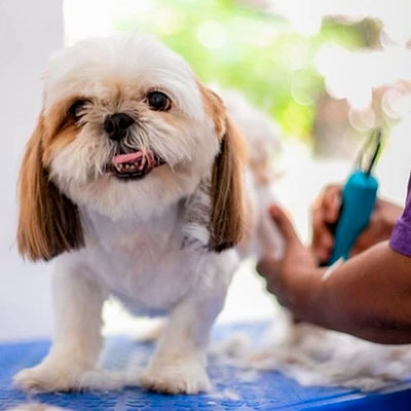

Nossos Serviços
O PetShop Amigo Fiel oferece serviços profissionais de banho e tosa para cães e gatos. Contamos com profissionais experientes e produtos de alta qualidade para garantir o bem-estar do seu pet.
Tele-busca: Oferecemos o serviço de tele-busca! Nós buscamos o seu pet em casa e o entregamos após o serviço, tudo com segurança e pontualidade.
Tabela de Serviços e Valores
| Serviço | Descrição | Valor (sem tele-busca) |
Valor (com tele-busca) |
|---|---|---|---|
|
 Banho |
Banho completo com shampoo e condicionador específicos para o tipo de pelagem do seu pet. Inclui secagem, escovação, limpeza das orelhas e corte de unhas. Utilizamos apenas produtos hipoalergênicos e de alta qualidade. | R$ 50,00 | R$ 70,00 |
|
 Tosa |
Tosa profissional higiênica ou na máquina, de acordo com a necessidade e preferência do tutor. Realizada por profissionais qualificados com equipamentos esterilizados. Disponível para diversas raças e portes. | R$ 60,00 | R$ 80,00 |
|
 Banho + Tosa |
Pacote completo com banho e tosa. Inclui todos os benefícios do banho (shampoo, condicionador, secagem, escovação, limpeza de orelhas e corte de unhas) combinados com a tosa profissional. A melhor opção para o cuidado completo do seu pet com desconto especial! | R$ 90,00 | R$ 120,00 |
Informações Importantes sobre os Serviços
- Os valores podem variar de acordo com o porte e a raça do animal.
- O serviço de tele-busca está disponível para a região metropolitana de São Paulo.
- Para agendar um serviço com tele-busca, entre em contato com pelo menos 24 horas de antecedência.
- Aceitamos pagamento em dinheiro, cartão de débito, cartão de crédito e PIX.
- O pet deve estar com a vacinação em dia para utilizar nossos serviços.
Como Agendar
Para agendar um serviço, entre em contato conosco por telefone, WhatsApp ou visite nossa loja. Para mais informações, acesse nossa página de contato.